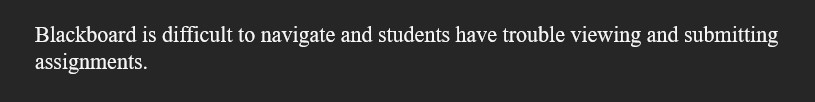
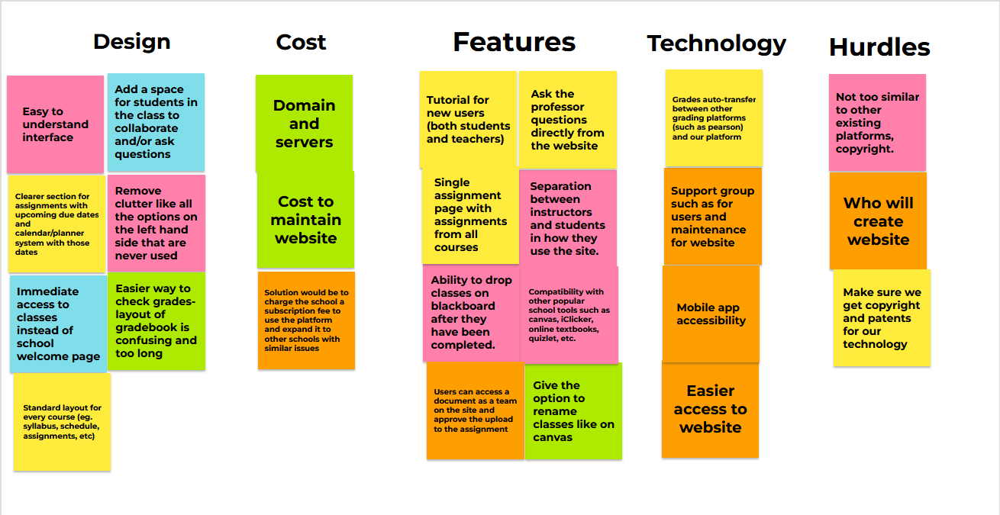
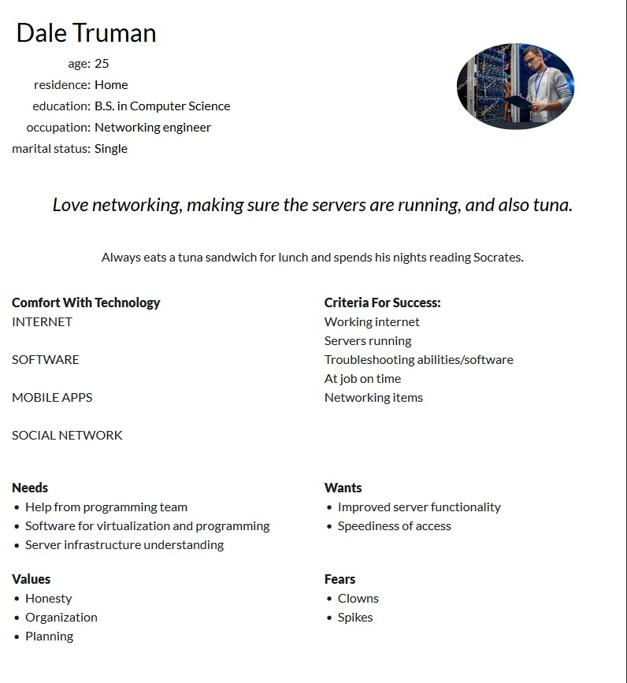
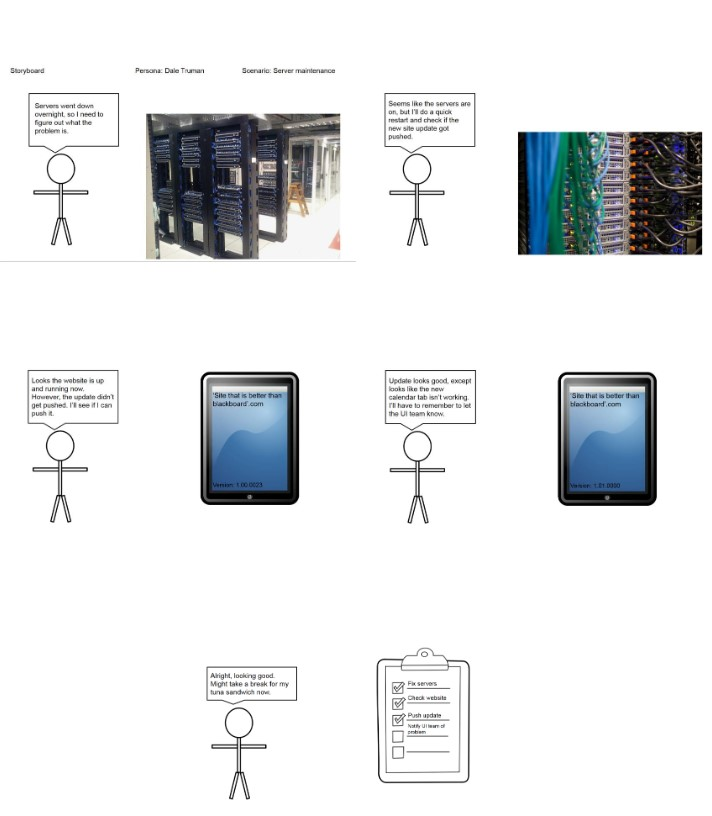

BlackBoard is difficult to navigate, and students have trouble viewing and submitting assignments.

With our problem of BlackBoard having issues, there are many solutions for how a new app could be done with design, costs, features, technology, and hurdles.

My persona's name is Dale Truman. He is a networking engineer at the company and helps host the website. He loves making sure everything is up-and-running and eating tuna.

In this storyboard, my persona, Dale, arrives to work and finds the servers down. He restarts them and pushes the new update to the site.